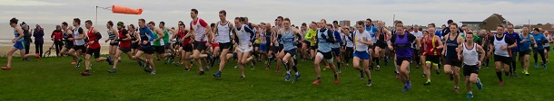

The sixth race in the Kent Fitness League 2018/19 Cross Country series took place at Minnis Bay, Birchington, on Sunday January 13th, writes Jim Knight
Thirty-four runners from Sevenoaks AC joined the 406 starters on the tough 6-mile course. Conditions were mild and dry for this year’s race, but the runners had to battle a strong head-wind all the way from Minnis Bay nearly 3 miles to the turnaround in Reculver. And dry is a relative term. The runners have to cross several deep dykes full of cold muddy water. This year they were waist deep, rather than chest-deep!
The race was won by Jay Smith of Dartford Road Runners in an impressive time of 34.59, followed by Simon Fox of Petts Wood Runners in 35.32.
The first Sevenoaks AC athlete home was 35-year-old James Mason in 4th, followed by Darrell Smith in 9th (1st M50). The remaining SAC scoring team members were Guillaume Nineven (17th), Andrew Hutchinson (20th), Ed Saunders (21st), Andrew Milne (24th), and Andy Ashlee (30th). The club’s second M50 was John Stevens in 66th. With 7 runners in the top 30, it was a comfortable win for Sevenoaks.
The women’s race was won by Deal Tri Club’s Renata McDonnell in 40.10 followed by Becky Morrish of Petts Wood Runners in 41.32. The SAC women ran strongly, with Cath Linney finishing in 11th place, closely followed by Vanessa Gilmartin in 14th, Marion Van Lille in 15th and Heather Fitzmaurice in 19th. There was another fine performance by Bridgit Weekes coming 2nd W60.
Petts Wood Runners, the current series leaders, fielded a strong team of 44 runners. They won the women’s race but were soundly beaten by Sevenoaks AC in the men’s race, giving Sevenoaks AC the club’s first KFL win for the combined team since October 2015 in Knole Park.
With this performance, Sevenoaks AC remain firmly in 2nd position in the series and have pulled ahead of Paddock Wood who have overtaken Dartford Road Runners to gain 3rd place.
The SAC results were:
| Ov Pos | Lg Pos | Runner | Age | Time | Club | Rating | # Races |
|---|---|---|---|---|---|---|---|
| 4 | 4 | James Mason | 35 | 37:08 | Sevenoaks AC | 98.90 | 9 |
| 9 | 9 | Darrell Smith | 51 | 37:57 | Sevenoaks AC | 97.07 | 12 |
| 17 | 17 | Guillaume Nineven | 33 | 38:46 | Sevenoaks AC | 94.14 | 4 |
| 20 | 20 | Andrew Hutchinson | 39 | 39:16 | Sevenoaks AC | 93.04 | 7 |
| 21 | 21 | Edmund Saunders | 36 | 39:22 | Sevenoaks AC | 92.67 | 10 |
| 24 | 24 | Andrew Milne | 36 | 39:41 | Sevenoaks AC | 91.58 | 34 |
| 30 | 30 | Andy Ashlee | 49 | 40:09 | Sevenoaks AC | 89.38 | 27 |
| 37 | 36 | Mike Lochead | 33 | 40:37 | Sevenoaks AC | 87.18 | 6 |
| 40 | 39 | Darius Sarshar | 49 | 40:44 | Sevenoaks AC | 86.08 | 6 |
| 41 | 40 | Jimmy George | 37 | 40:46 | Sevenoaks AC | 85.71 | 7 |
| 66 | 63 | John Stevens | 57 | 42:05 | Sevenoaks AC | 77.29 | 21 |
| 67 | 64 | Jim Harness | 51 | 42:13 | Sevenoaks AC | 76.92 | 9 |
| 74 | 70 | Daniel Witt | 43 | 42:29 | Sevenoaks AC | 74.73 | 51 |
| 80 | 76 | Jatinder Soomal | 36 | 43:01 | Sevenoaks AC | 72.53 | 6 |
| 111 | 101 | Nick Holmes | 43 | 44:46 | Sevenoaks AC | 63.37 | 5 |
| 112 | 11 | Cath Linney | 49 | 45:00 | Sevenoaks AC | 92.48 | 28 |
| 116 | 105 | James Nash | 27 | 45:09 | Sevenoaks AC | 61.90 | 21 |
| 122 | 14 | Vanessa Gilmartin | 43 | 45:45 | Sevenoaks AC | 90.23 | 10 |
| 123 | 109 | Andy Evans | 48 | 45:47 | Sevenoaks AC | 60.44 | 43 |
| 127 | 15 | Marion Van Lille | 33 | 46:07 | Sevenoaks AC | 89.47 | 6 |
| 133 | 117 | Graham Dwyer | 46 | 46:20 | Sevenoaks AC | 57.51 | 6 |
| 135 | 119 | Stuart Thompson | 44 | 46:26 | Sevenoaks AC | 56.78 | 7 |
| 142 | 19 | Heather Fitzmaurice | 49 | 46:42 | Sevenoaks AC | 86.47 | 76 |
| 193 | 161 | Hugh Shewell | 29 | 49:13 | Sevenoaks AC | 41.39 | 20 |
| 194 | 162 | Tony Horlock | 58 | 49:14 | Sevenoaks AC | 41.03 | 8 |
| 203 | 169 | Duncan Cochrane | 61 | 49:37 | Sevenoaks AC | 38.46 | 30 |
| 205 | 171 | Andy Manning | 50 | 49:43 | Sevenoaks AC | 37.73 | 6 |
| 223 | 40 | Nicki Thompson | 42 | 50:30 | Sevenoaks AC | 70.68 | 22 |
| 229 | 41 | Bridgit Weekes | 60 | 50:53 | Sevenoaks AC | 69.92 | 6 |
| 235 | 43 | Elaine Knight | 38 | 51:28 | Sevenoaks AC | 68.42 | 3 |
| 238 | 46 | Sarah Shewell | 59 | 51:44 | Sevenoaks AC | 66.17 | 108 |
| 259 | 50 | Rhea Malkin | 33 | 52:47 | Sevenoaks AC | 63.16 | 5 |
| 280 | 57 | Paula George | 54 | 53:58 | Sevenoaks AC | 57.89 | 4 |
| 383 | 265 | James Fitzmaurice | 76 | 1:07:03 | Sevenoaks AC | 3.30 | 70 |
The full results are here.
Petts Wood have an unbeatable lead in the series, but the final positions for the remaining teams will be decided in the last race of the series, to take place in Rough Common, Canterbury on Sunday Feb 3rd.

The Kent Fitness League is a series of cross-country races between the 18 registered Athletics Clubs in Kent. Any number of club members can compete, but 12 are needed to score in the team competition – 8 men (of whom two must be V50 and one V40) and 4 women (of whom one must be V45 and one V35).